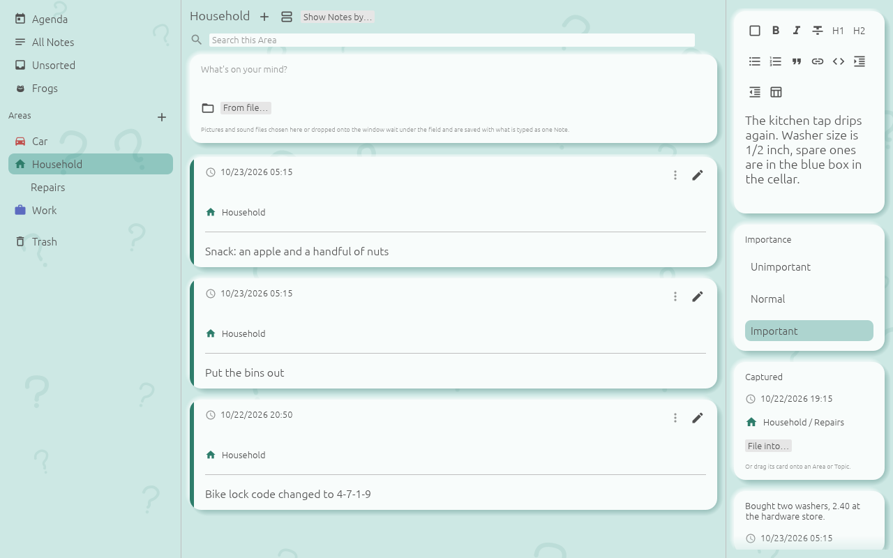
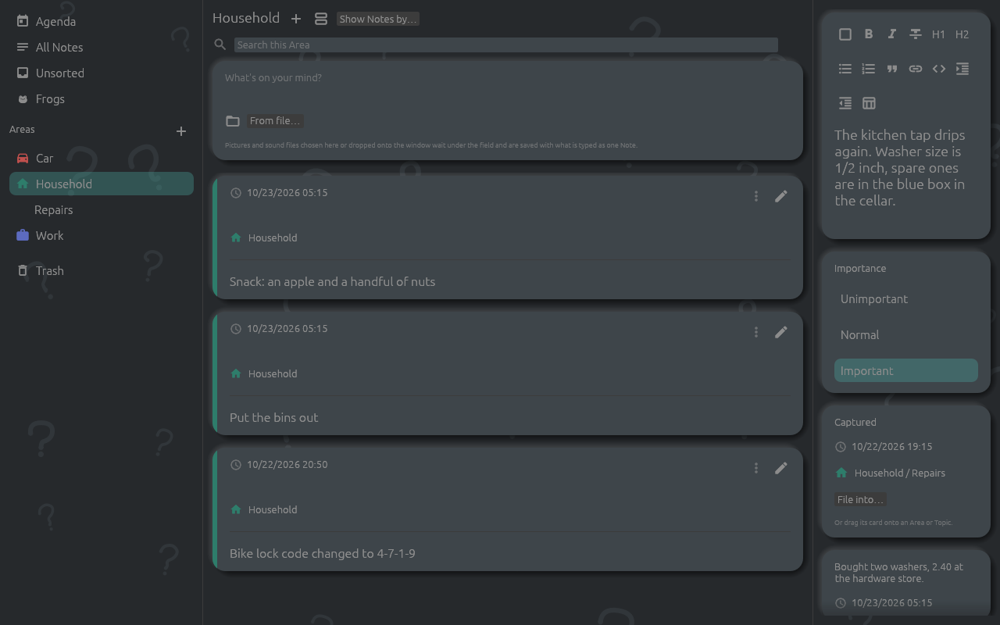
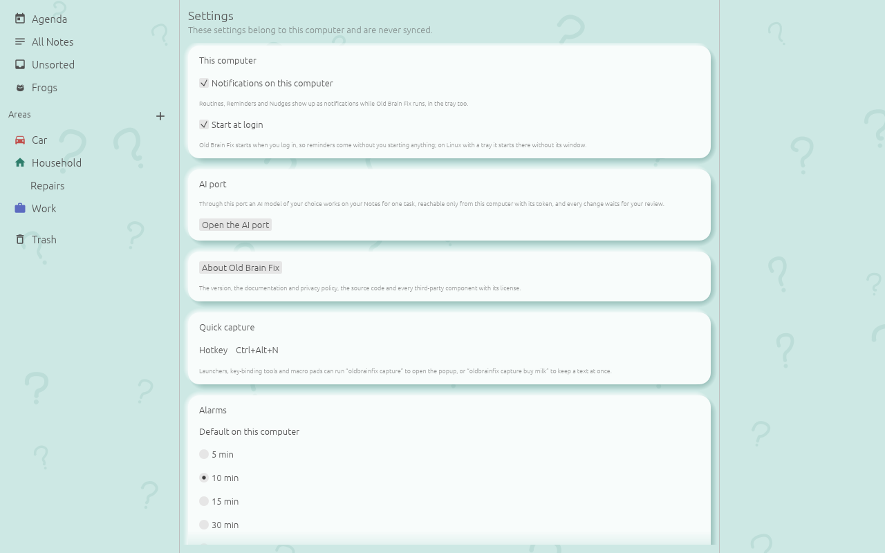
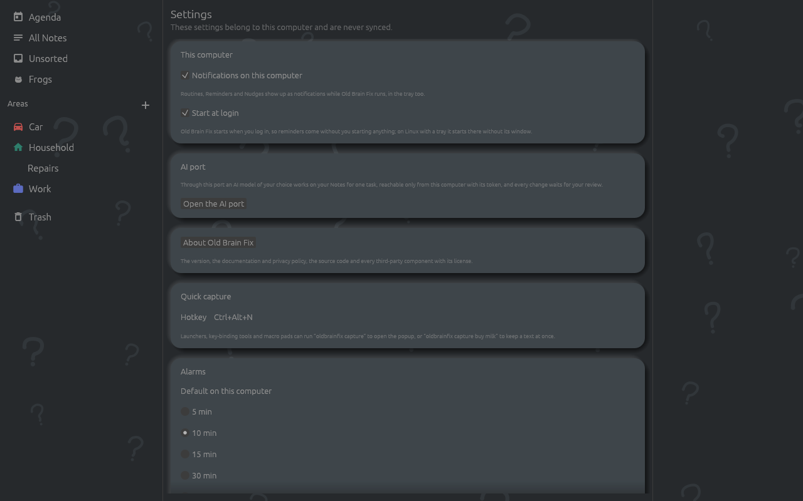

The desktop app runs on Linux, Windows and macOS and holds the same Notes, Areas and Routines as the phone once the two are paired. It is a window with three panes, worked with the mouse and the keyboard, with a capture popup and a command line for capturing from anywhere. Settings belong to this computer and are never synced.
The app is installed with Homebrew, Scoop, a .deb, a Flatpak file, an AppImage, a disk image or a zip file; see Install. On Linux, outside the Flatpak, every start writes or refreshes the app's entry in the application menu and its icon.
The first start offers the same three choices as the phone: New to Old Brain Fix with the Starter Set, Add a Device of mine and Restore from a Backup (see Getting started). The Profile takes the name and picture of your login on the computer, or else the computer's name. The desktop asks neither for the speech model nor for alarm access.
The window has three panes; the borders between them can be dragged.
In a list of Notes, a click unfolds a compact card; a double-click or the pencil opens the Note in the editor. A right-click on a card or its ⋮ opens Edit, the Checklist and Shopping List entries (see Lists, Tallies, Sessions and Frogs), Send to a person, Copy as text and Save as Markdown…. A card dragged onto an Area or Topic in the left pane is filed there; Notes in the Trash are not dragged.
The Agenda's bar holds All Routines and Reminders, New Routine or Reminder and the Profile picture. The Profile picture leads to the Profile page, which leads on to Settings and to Sync with another Device.


Where the phone goes back with a swipe, the desktop uses keys and the mouse's side buttons. Alt+Left and Alt+Right rest while the cursor is in a text field; the mouse buttons always work.
On Linux the app shows an icon in the tray, where the desktop has one: KDE, Xfce, Cinnamon, and GNOME with the AppIndicator extension. A click on the icon opens the window; its menu holds Open Old Brain Fix, Capture a Note and Quit. Closing the window leaves the app running in the tray, with its notifications, its hotkey, the sync with paired Devices and the weekly Backup; Quit ends it.
Windows and macOS have no tray icon, nor has Linux without a tray. There, closing the window ends the app, and with it the notifications and the hotkey, until it is started again.
Settings, "This computer", Start at login is on unless switched off. It writes an autostart entry on Linux (inside the Flatpak through the desktop's Background portal), a LaunchAgent on macOS and a Run entry for your user on Windows. On Linux with a tray the login start goes into the tray without a window; on Windows, on macOS and on Linux without a tray it opens the window.
The app runs once per user. A second start, from the menu or a command, hands its wish to the running app: its window opens, or its capture popup.


The hotkey, Ctrl+Alt+N unless changed, opens the popup "Capture a Note" over all other windows,
on Linux also while the app runs in the tray without its window. The tray's Capture a Note and the command
oldbrainfix capture open it too. It takes text, a voice recording and the clipboard,
offers the same action row as the capture field, and never asks anything: Enter saves the Note
with a Nudge in 1 h, and Esc keeps what is typed the same way (see
Capture and sort).
oldbrainfix opens the window.oldbrainfix capture opens the capture popup.oldbrainfix capture buy milk keeps "buy milk" as an Unsorted Note with a Nudge in 1 h, without a window. After -- every word is text, also one that starts with "-".oldbrainfix capture - keeps what comes in on standard input.oldbrainfix import FILE imports a sync bundle and prints what came in.oldbrainfix open FILE shows a Sent Item in the window, to accept or decline.oldbrainfix --help prints the usage.A capture or an import goes through the running app, which plans the Nudge at once; when none runs, the command writes the Note itself, and the Nudge comes once the app runs. A capture that worked prints nothing. The exit code is 0 when it worked, 1 when the Note could not be kept or the bundle imported, and 2 for wrong arguments or nothing to capture. Launchers, key-binding tools and macro pads can run these commands, also where the desktop offers no hotkey.
.obfsync) dropped onto the window is imported; a Sent Item (.oldbrain) is shown to accept or decline.The alarms of Routines and Reminders, the Nudge, the Changes Nudge and "Missed while Old Brain Fix was not running" come as the system's notifications, for as long as the app runs. The switch "Notifications on this computer" in Settings turns them off. A click on a notification opens the window: on Unsorted for the Nudge; for the Changes Nudge, a save dialog for each person waiting.
The app plays the alarm sound itself, and an escalated alarm turns the notification urgent; there is no full-screen alarm (see Routines, Reminders and the Agenda).
Transcripts need the speech model, chosen and downloaded under Settings, Speech model, or taken from a file of your own, as on the phone. Recordings without a Transcript, also those from the phone that were not transcribed there, follow once it is in place. Photo Texts need no download: the text recognition is part of the app. Both run on this computer, one recording or photo at a time, while the app runs (see Formatted text, Transcripts and Photo Texts).
The Profile page's Sync with another Device opens Sync. It shows this computer's code, as a QR code and as text with its PIN, for the phone to scan; a phone that is not paired yet is asked about first, Trust or Refuse. A code the phone shows is typed or pasted into Pair code and joined with Sync with this code. Paired Devices on the same network then sync on their own for as long as the app runs, on Linux also in the tray; the shared folder syncs every half minute. See Sharing and sync for pairing, the shared folder, bundles and Conflicts.
Only the desktop has the AI port. Settings, Open the AI port lets an AI model of your choice work on your Notes for one task, reachable only from this computer with its token. Sync waits while the port is open and until the review. Done, review closes the port and lists every change with its before and after, to accept or reject as a whole (see The AI Task).